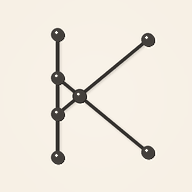

KNOT
Uma linguagem de linhas, loops e cruzamentos. Fácil de tocar; difícil de dominar.
Run
Monte uma build de Knots e adapte sua geometria a seis rodadas com regras e desafios diferentes.
Puzzle competitivoAtlas
Mapas fixos com Passar, Prata, Ouro e Mestre. Feitos são desafios laterais para dominar cada mapa.
Sem assets externos · áudio procedural · mobile-first